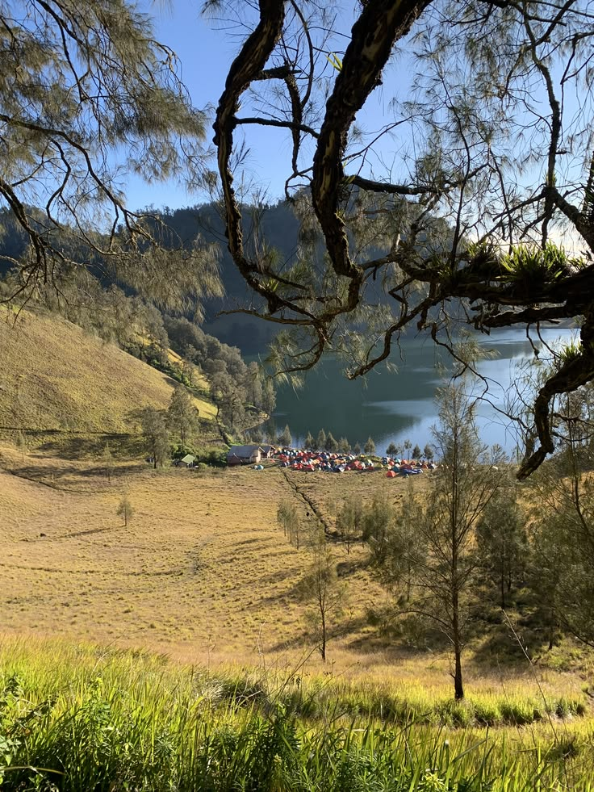
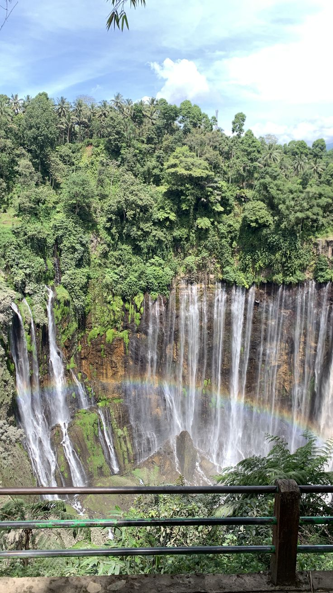
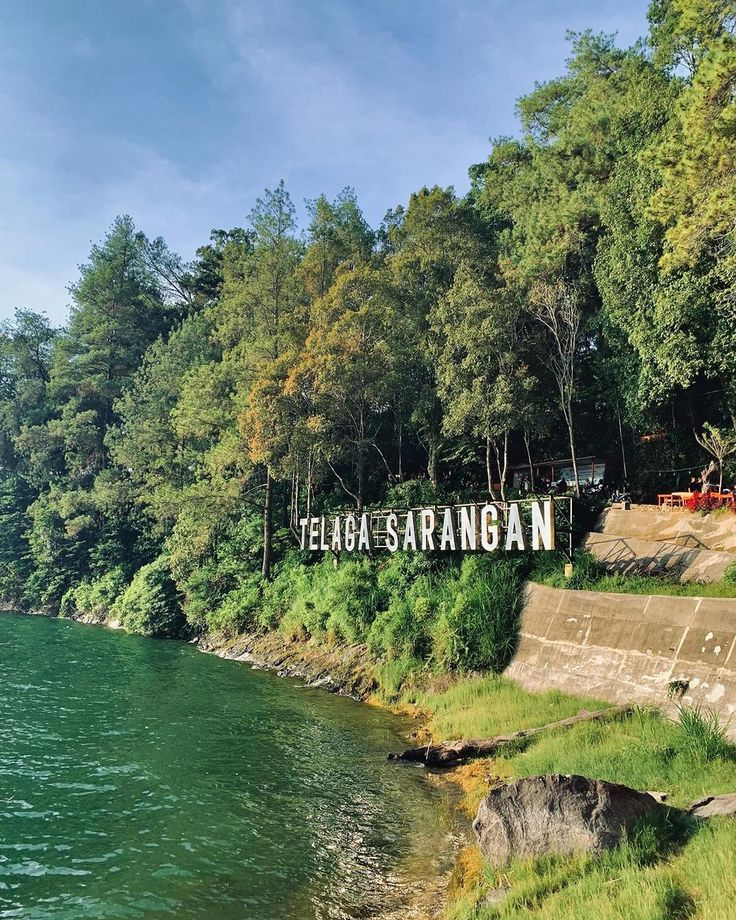

JELAJAH WISATA INDONESIATemukan Keindahan Alam dan Budaya Indonesia |
||
| Beranda | Wisata | Galeri |
🏠 BerandaSelamat datang di website Jelajah Wisata Indonesia. Website ini berisi informasi berbagai tempat wisata menarik yang ada di Indonesia. Indonesia memiliki banyak sekali destinasi wisata mulai dari pegunungan, pantai, laut, hingga wisata budaya. |
||
🏔️ Destinasi WisataBerikut adalah objek wisata menarik di pulau jawa |
||
|
 Danau Ranu KumboloDanau indah di kawasan Gunung Semeru dengan air yang jernih dan dikelilingi perbukitan hijau. Tempat ini terkenal dengan pemandangan matahari terbit dan suasananya yang sejuk. |
 Air Terjun Tumpak SewuAir terjun yang sangat lebar, dikelilingi tebing dan pepohonan hijau, serta memiliki pemandangan Gunung Semeru. |
 Telaga SaranganTelaga Sarangan adalah wisata danau alami di Magetan, Jawa Timur, yang berada di lereng Gunung Lawu. Tempat ini terkenal dengan udara sejuk dan pemandangan pegunungan yang indah. |
🎵 Musik NusantaraSilakan dengarkan musik berikut sambil menikmati informasi wisata Indonesia. |
||
🌄 Wonderland IndonesiaSilakan melihat video berikut sambil menikmati informasi wisata Indonesia. |
||
|
2026 Regita Rahma Sehan. |
||